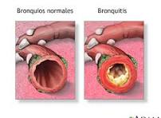

Bronquitis
Descripción

La bronquitis es una inflamación de las vías aéreas bajas. Sucede cuando los bronquios se inflaman a causa de una infección o por otros motivos. Esto provoca tos. La bronquitis suele comenzar como una infección en la nariz, los oídos, la garganta o los senos paranasales.
Síntomas
- Tos frecuente, a veces sanguinolenta
- Inflamación de los bronquios
- Fatiga
- Dificultad respiratoria
Tratamiento
Antibióticos si es de origen bacteriano, e inhaladores en caso de bronquitis asociada al asma.